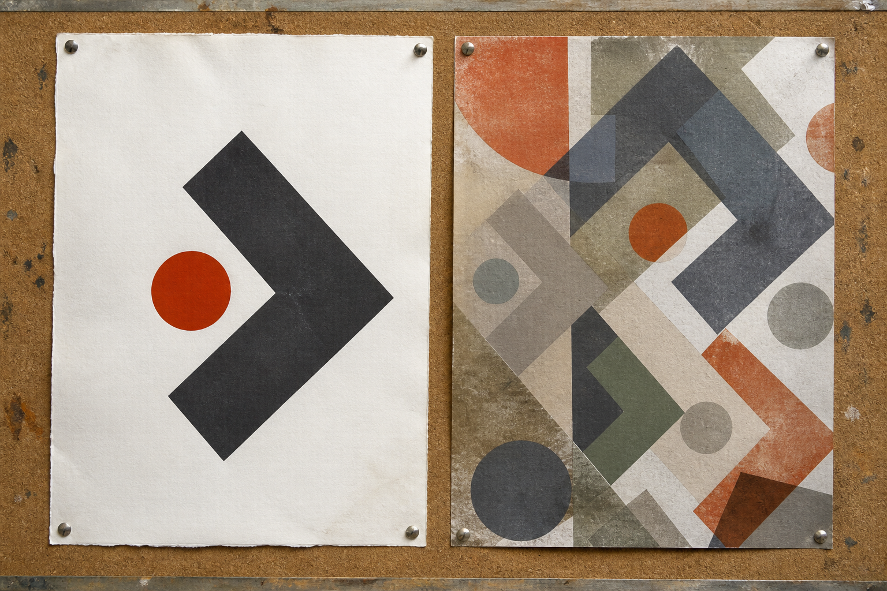
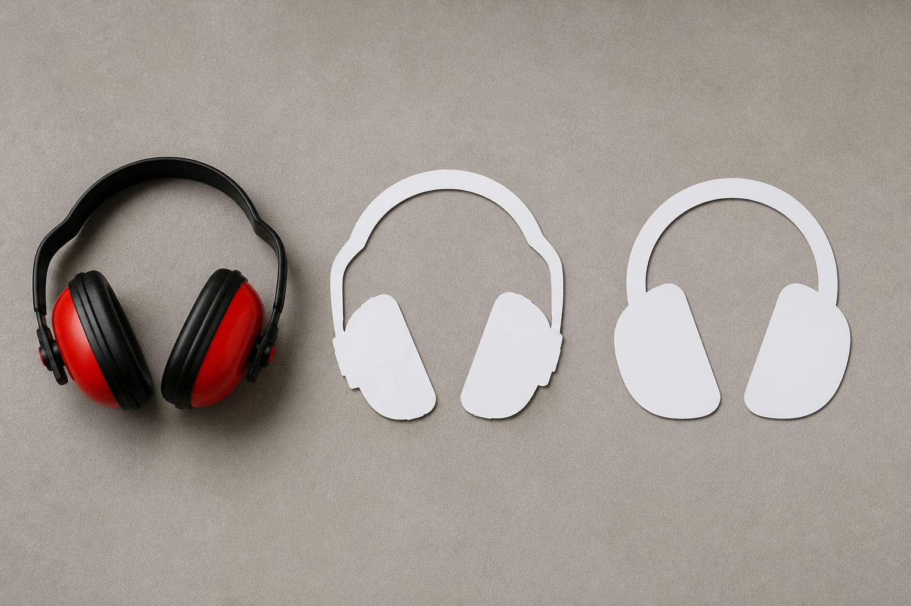
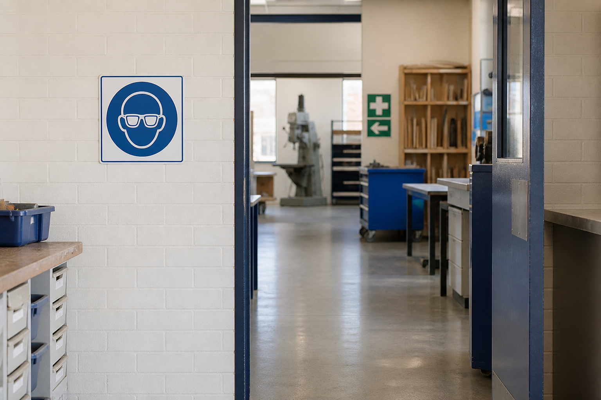
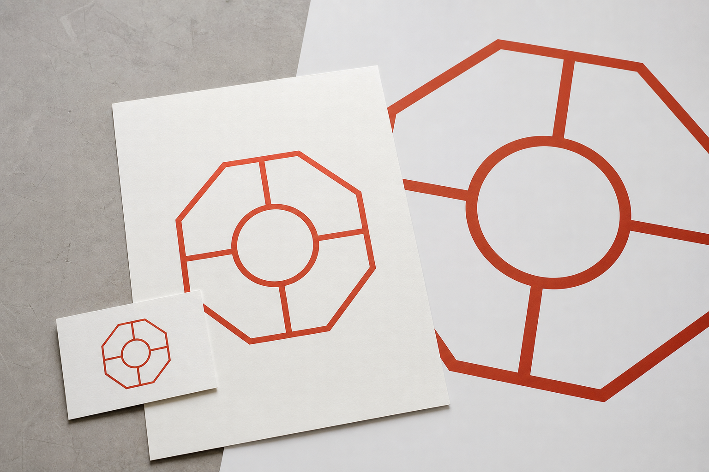
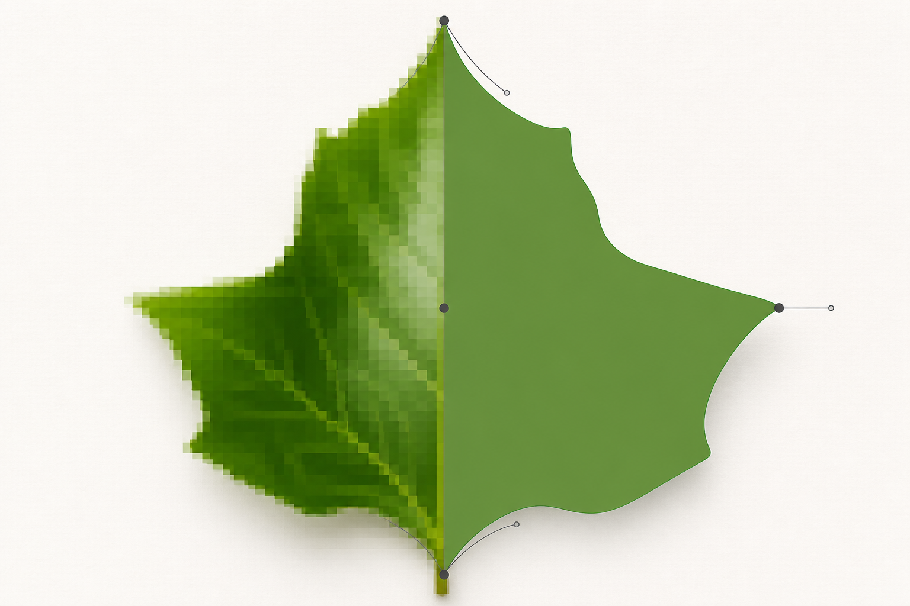
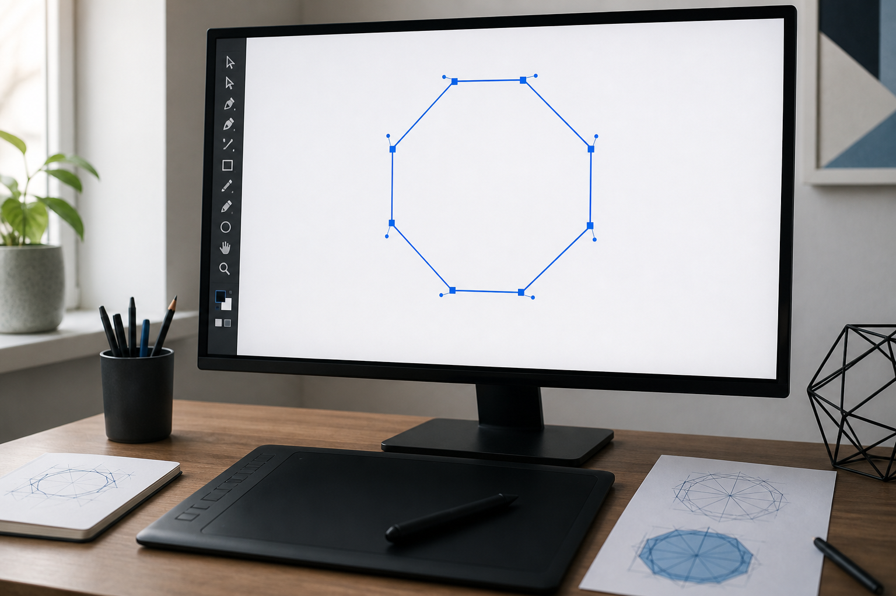
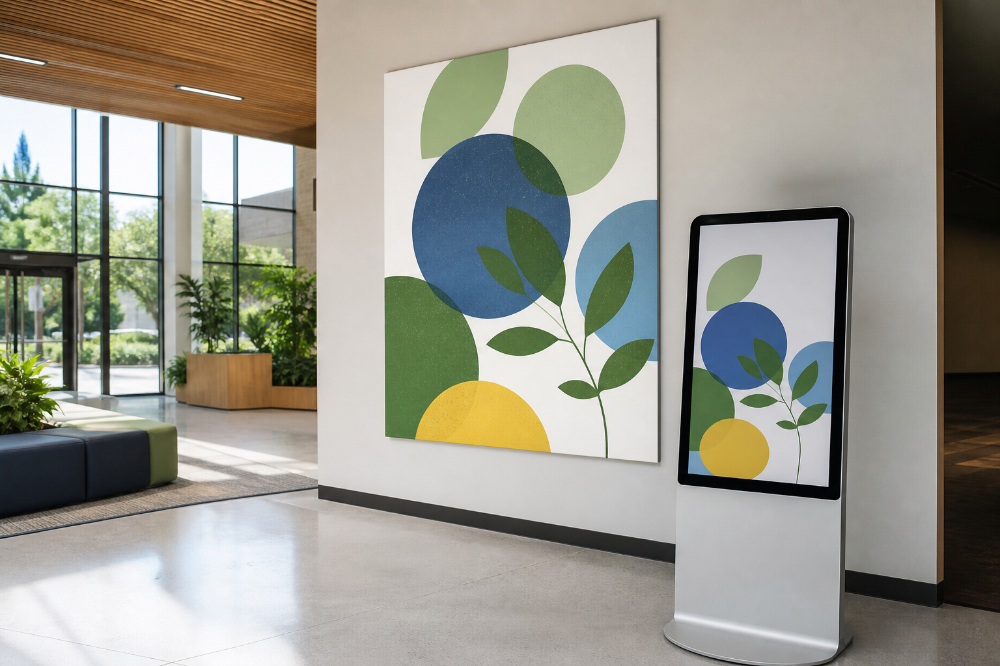
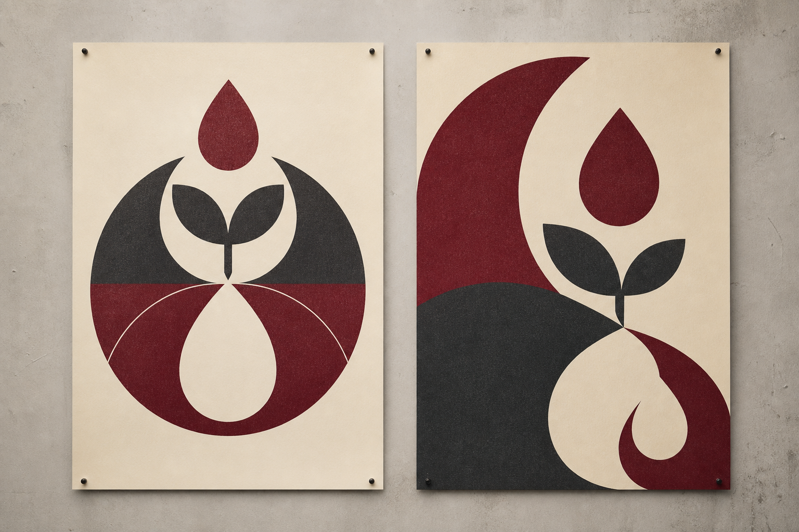

Classroom presentation
Graphic Design & Communication slides
Use the module deck for short, continuous whole-class explanation, retrieval and exit evidence.
Module 1 of 4 · Term 1
Use visual conventions, vector construction and design principles to communicate responsibly for an audience.
Classroom presentation
Use the module deck for short, continuous whole-class explanation, retrieval and exit evidence.
Section M01S01
Students can apply this theory when identifying the purpose of workshop safety signs, researching additional sign types, and later creating or critiquing safety-sign graphics. Their explanations should refer to visual evidence and context rather than relying only on recognition, colour or personal preference.
Safety signs are a form of visual communication. Their job is to help people recognise important information quickly and respond appropriately in the place where the sign is used. In a workshop, school, public building or workplace, a sign may identify a hazard, prohibit an action, indicate something that must be done, or help people locate safety-related facilities and routes. Understanding a safety sign therefore involves more than recognising its picture. You need to consider how its visual features communicate meaning and how the sign works in its actual context.
A successful safety sign combines several visual conventions. Colour helps distinguish categories of information, while shape provides another recognition cue. A symbol communicates the main idea visually, and strong contrast helps important features stand out from their background. These features work together rather than independently. This is why it is unsafe to assume that one colour always has one meaning. For example, the claim that red always means danger is too simple. Red may appear in different safety-sign contexts, so the complete sign and its purpose need to be interpreted together.
Visual hierarchy controls what the viewer notices first, second and third. On a well-designed sign, the most important message should be easy to recognise without decorative elements competing for attention. Where wording is needed, it should be concise and support the visual message. Adding extra sentences does not automatically make a sign safer. Too much text can slow recognition, particularly when a viewer is moving past the sign or needs to understand it quickly.
The symbol also needs to suit the communication task. A highly realistic drawing is not automatically clearer than a simplified graphic. Realistic pictures can contain unnecessary detail, whereas a carefully simplified symbol can emphasise the features needed for recognition. In Graphics Technology, simplification is purposeful: the designer removes detail that does not help communicate the message while preserving the features that do.
A sign should not be judged as an isolated image. First consider where it is located, who needs to see it and what it is intended to communicate. A symbol that appears obvious on a computer screen may be less effective when viewed from further away, among other signs or against a visually busy background. Placement, viewing conditions and surrounding information can change how successfully a graphic communicates.
Context also affects interpretation. Signs such as first aid, mandatory personal protective equipment, no smoking, exit and warning signs illustrate different communication purposes. Before describing, copying or redesigning one, identify what the sign is actually communicating. Look at the complete sign and its surroundings rather than guessing its purpose from colour or one familiar-looking symbol.
A useful critique explains why a visual decision succeeds or fails. Instead of writing, ‘This is a good sign because it looks professional’, identify evidence. You might explain that the main symbol is easy to distinguish because it has strong contrast, that unnecessary detail has been removed, or that the wording supports rather than repeats the visual message.
Ask whether the most important information is recognised quickly. Check whether the symbol remains understandable when the sign is viewed at its intended scale. Look for competing details, weak contrast, crowded wording or an unclear hierarchy. Then connect your observation to the intended audience and location. A strong judgement might explain that a sign is difficult to interpret because several detailed images compete for attention, making the main message harder to identify quickly.
Remember that graphic design is only one part of safety communication. A well-designed sign can communicate information effectively, but it does not replace teacher instructions, induction, supervision or other risk controls. Your role as a graphics student is to understand and improve the communication of the sign, not to treat the graphic as the entire safety system.
Safety signs provide a useful introduction to vector graphics because they depend on deliberate shapes, clean edges, controlled colour, readable symbols and clear visual hierarchy. In the next section, you will transfer these ideas into vector-graphics work. The goal is not simply to reproduce an image. It is to make deliberate graphical decisions so that shapes, symbols and other elements communicate clearly and remain suitable for their intended purpose.



Applied Learning Activity · about 18 minutes
Interpret a safety sign through its complete visual system and viewing context rather than one familiar feature.
Do: Read each statement without imagining a local workshop rule. Sort it as observed visual evidence, a context question, or an unsupported conclusion. Check the sort, revise any weak decisions, then complete the three-sentence critique.
Start or resume this activityFormative practice only — not formal assessment, folio submission, teacher-observed evidence or a competency decision.
Practice, not submission. Your responses stay in this browser unless you export them.
Resume this packageHigher-order capstone · evaluate
Organise the response as context, visual evidence, judgement, improvement and safety-system boundary.
Section M01S02
Students can apply this workflow to the teacher-led stop-sign warm-up, the later dysfunctional-sign activity and the tracing of a mandatory sign. The stop-sign settings provide a controlled construction exercise, while the dysfunctional-sign task shifts attention from software neatness to explaining how design decisions can weaken communication. Tracing provides practice in vector construction but should remain connected to the sign's audience, purpose and context.
In the previous section, you analysed how signs communicate through shape, symbol, contrast, hierarchy and context. The next step is learning how to construct those graphics accurately and efficiently. Adobe Illustrator is designed for creating and editing vector graphics, making it well suited to signs, symbols, logos, diagrams and other graphics that depend on controlled shapes and clean edges. Technical accuracy matters, but a technically perfect file can still communicate poorly. The aim is to combine software control with deliberate visual decisions.
Digital graphics are commonly described as vector or raster. A raster image is constructed from a grid of pixels. Photographs are a common example because pixels can represent complex changes in colour, tone and detail. If a raster image is enlarged far beyond its intended size, individual pixels may become noticeable and edges can appear less smooth.
A vector graphic is constructed mathematically from paths, points and shapes rather than a fixed grid of pixels. A path can contain straight or curved sections controlled by anchor points. Because the geometry can be recalculated when the graphic changes size, a vector sign or symbol can usually be enlarged or reduced while retaining clean edges. This does not mean vectors are ‘higher resolution photographs’. Photographs and vector drawings store visual information differently and suit different jobs.
Consider a photograph of a workshop object and a simple safety symbol. Raster graphics are generally appropriate for the photograph because they can record detailed variations in texture, light and colour. Vector graphics are generally more suitable for the safety symbol because its simplified shapes, outlines and text need to remain clean, editable and consistent at different sizes. The better format depends on the communication purpose rather than one format being universally superior.
Illustrator provides live shapes that allow geometric properties to remain adjustable after a shape is created. A shape can have a fill, which controls the appearance inside it, and a stroke, which controls its outline. Anchor points allow paths to be adjusted, but more anchor points do not automatically produce a better shape. Unnecessary points can make a path harder to control and can introduce unwanted bumps or inconsistencies. Good vector construction usually uses geometry that is as simple as the intended form allows.
Other parts of the document help organise the work. The artboard defines the working area for the graphic. Layers can separate and organise elements so that complex artwork remains manageable. Alignment controls help establish consistent relationships between objects. Together, these features make a vector file editable: instead of rebuilding the entire graphic, you can adjust individual shapes, positions, fills, strokes or other elements.
A reliable workflow starts before detailed drawing. First identify the purpose of the graphic and consider the document setup required for the task. Then construct the main geometry using suitable shapes and paths. Add fills and strokes deliberately, organise elements where useful, align related objects and add text or symbols. Finally, inspect the complete design rather than assuming that accurate construction guarantees effective communication.
For example, the class stop-sign exercise can be built from an octagonal form. The teacher exercise uses a deep red example around RGB 204, 2, 2, with small variation acceptable, together with a white border, sans serif capital lettering and a consistent relationship between the shape and text. These values are exercise settings for checking your construction and visual relationships; they should not be treated as a universal legal specification for every stop sign.
When selecting colour, distinguish between choosing a colour for an object and setting the colour mode of the document. Illustrator's colour controls can be used to select and adjust colour values for artwork. Entering an RGB value for a selected object does not by itself mean that you have changed the colour mode of the entire document. The colour information displayed by a panel and the document's colour mode are related parts of colour management, but they are not identical settings.
This last check is important. Imagine a sign with perfectly aligned objects, smooth paths and consistent strokes, but with weak contrast between its symbol and background. Technically, the file may be neat. Communicatively, it may still fail because the main information is difficult to recognise. Similarly, a beautifully traced symbol can be unsuitable if it is used for the wrong audience, purpose or location. Tracing does not remove the need for design judgement.
The deliberately dysfunctional-sign activity makes this distinction useful. Poor communication can be created intentionally by disrupting hierarchy, contrast, proportion, readability or other relationships. Explaining why those decisions fail demonstrates more understanding than simply saying that a sign ‘looks bad’. The same thinking applies when tracing an existing mandatory sign: accurate paths are only one part of the task. You should still understand what the graphic communicates and why its visual decisions matter.
Export is the point where your editable Illustrator artwork is prepared for another use. Before exporting, inspect the original vector file carefully. Check the geometry, alignment, text, fills, strokes and visual hierarchy. Look for accidental objects, inconsistent spacing, unwanted path changes or elements that have become difficult to read. View the design as a complete communication rather than only as a collection of accurately drawn parts.
The intended destination should guide the export choice. An editable working file and an exported graphic serve different purposes, so preserving an editable source is valuable when further changes may be required. A finished export should also be checked in the form in which the audience is expected to encounter it. The important question is not simply ‘Did Illustrator export the file?’ but ‘Does the exported graphic still communicate clearly for its intended use?’
Vector skills give you technical control over geometry, colour, text and organisation. The next stage is deciding how that control should be used. In the following section, you will connect these technical choices to broader design principles and consider how audience, culture and intellectual property influence what responsible graphic designers create and communicate.



Applied Learning Activity · about 20 minutes
Use a deliberate vector workflow in which editable construction and communication checks lead to an appropriate export.
Do: Put the workflow stages in a defensible order. Check the sequence and read the feedback. For each fault, select the most useful next check and explain why.
Start or resume this activityFormative practice only — not formal assessment, folio submission, teacher-observed evidence or a competency decision.
Practice, not submission. Your responses stay in this browser unless you export them.
Resume this packageHigher-order capstone · justify
Move from construction decisions to organisation, communication checks and final export verification.
Section M01S03
Students can apply this theory when developing and critiquing graphics for a chosen purpose and audience. Their design rationale should link visual choices to the brief rather than personal preference, while source checks should distinguish inspiration and reference from copying. When cultural knowledge, symbols or expressions may be involved, students should pause and seek the current teacher and community guidance before proceeding.
Good graphic design is not only about making something look attractive. It is about making deliberate choices so that a message suits its purpose, reaches its intended audience and respects the sources, people and cultural material connected to the design. By this stage, you can analyse how signs communicate and construct controlled vector graphics. The next step is learning how to justify why particular design decisions are appropriate.
Every graphic communication has a purpose: it may need to inform, warn, persuade, identify, explain or direct. It also has an audience: the people who are expected to see, understand or respond to it. A design decision is only effective when it helps that audience understand the intended message.
Audience affects choices such as wording, type size, symbol complexity, colour relationships and the amount of information shown. A graphic intended for quick recognition should not force the viewer to search through unnecessary details. A graphic that explains a complex idea may require more structure and supporting information. The important question is not simply ‘Do I like this design?’ but ‘Does this design work for the people who need to use it?’
A useful design rationale explains the connection between the brief and your choices. Instead of saying, ‘I used this colour because it looks good’, explain how the colour contributes to contrast, hierarchy, tone or recognition for the intended audience. Instead of saying, ‘I centred everything because it looks neat’, explain how the composition helps the viewer identify the main message. A rationale turns personal preference into design reasoning.
Composition is the way visual elements are arranged within the available space. It controls how the viewer moves through the design and which areas receive attention. Strong composition gives important elements enough space and creates clear relationships between images, text and empty areas.
Proportion describes the size relationship between elements. A heading that is too small compared with decorative elements may lose importance. A symbol that dominates everything else may overpower supporting information. Proportion helps establish hierarchy by showing what matters most and what plays a supporting role.
Balance is the distribution of visual weight. Balanced does not mean that every successful design must be perfectly symmetrical. Symmetrical layouts can feel stable and formal, but asymmetrical designs can also feel balanced when differences in size, position, tone or detail are controlled carefully. The goal is visual stability, not automatic mirroring.
Tone refers to differences in lightness and darkness. It can separate elements, create emphasis and help organise information. Contrast is a stronger difference between elements, such as light against dark, large against small or simple against detailed. Contrast can make important information easier to recognise, but too many competing contrasts can weaken hierarchy by making everything demand attention at once.
These principles work together. Changing the size of a symbol affects proportion, balance and composition. Changing its tone may alter contrast and hierarchy. This means graphic design is usually an iterative process: make a decision, inspect its effect on the complete design, then refine it.
Graphic designers often work from existing information, references and visual research. There is an important difference between inspiration, reference and copying. Inspiration means learning from broader ideas or approaches and developing your own response. A reference is a source you examine for information, visual research or context. Copying reproduces a substantial visual element rather than developing an independent design response.
Changing one feature does not automatically make copied artwork original. Recolouring a copied illustration, symbol or logo does not remove the need to consider who created it, what rights may apply and whether you have permission to use it. Likewise, finding a logo on the internet does not mean it is free to use. Trade marks can protect signs used to distinguish goods or services, such as names, logos and other brand identifiers. Copyright and trade mark protection are different areas, so you should not assume that copyright operates through the same registration process as a trade mark.
First Nations cultural material requires particular care because it can involve Indigenous Cultural and Intellectual Property, often shortened to ICIP. ICIP can concern cultural heritage, traditional knowledge, stories, symbols, designs, languages, performances and other cultural expressions. These materials are not simply a visual resource to borrow because they look distinctive.
A responsible design process recognises that cultural authority and context matter. Good intentions are not enough to justify using First Nations cultural material. If a design idea may involve Aboriginal or Torres Strait Islander cultural knowledge, designs, symbols or expressions, pause and seek the current teacher and community guidance. Respectful engagement and permission need to be guided by the relevant custodians and the appropriate local process rather than invented by the designer.
This is why generic attempts to make something look ‘Aboriginal-style’ are inappropriate. Cosmetic borrowing can remove cultural material from its meaning, people and place. Responsible design is based on relationships, authority, provenance and context, not surface decoration.
As you move into architectural drawing, the subject matter changes but the design responsibility remains. Graphic decisions still need to be purposeful, legible, source-aware and accountable. Whether you are arranging a campaign graphic or preparing a technical drawing, you should be able to explain what you have chosen, why it suits the communication task and where your information and visual material came from.


Applied Learning Activity · about 22 minutes
Connect design principles to audience and purpose while pausing when provenance, permission or cultural authority is uncertain.
Do: Triage each proposal using only the evidence supplied. Check the feedback before revising. Rewrite one weak personal-preference statement as a design rationale linked to audience and purpose.
Start or resume this activityFormative practice only — not formal assessment, folio submission, teacher-observed evidence or a competency decision.
Practice, not submission. Your responses stay in this browser unless you export them.
Resume this packageHigher-order capstone · compare
Use a point-by-point comparison, then finish with a justified selection and source-responsibility plan.
End-of-module review
Completion means the questions were checked and the capstone has text saved. It does not mean submission or a formal mark.